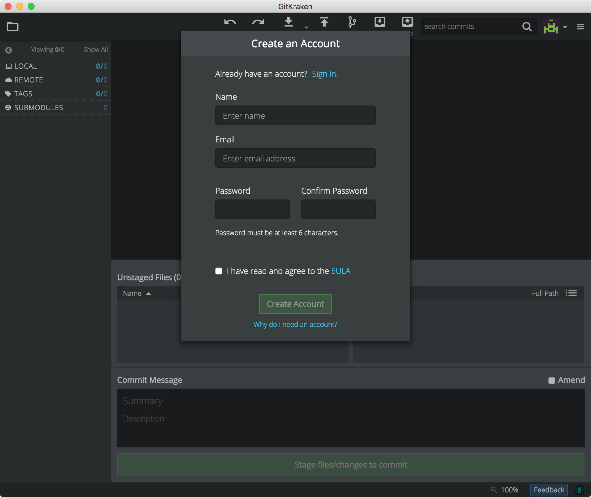
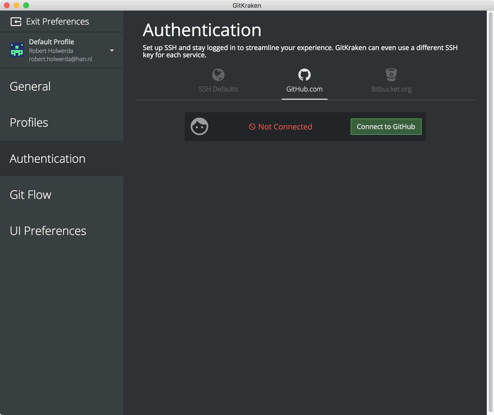
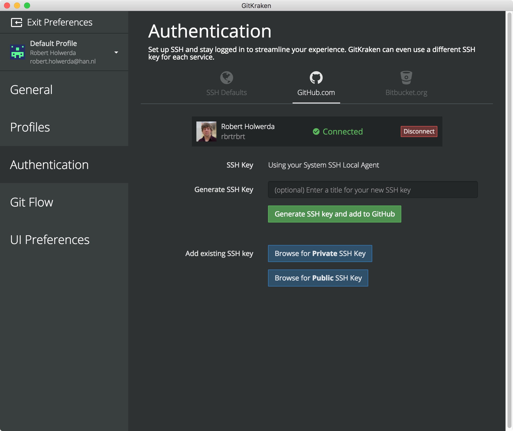
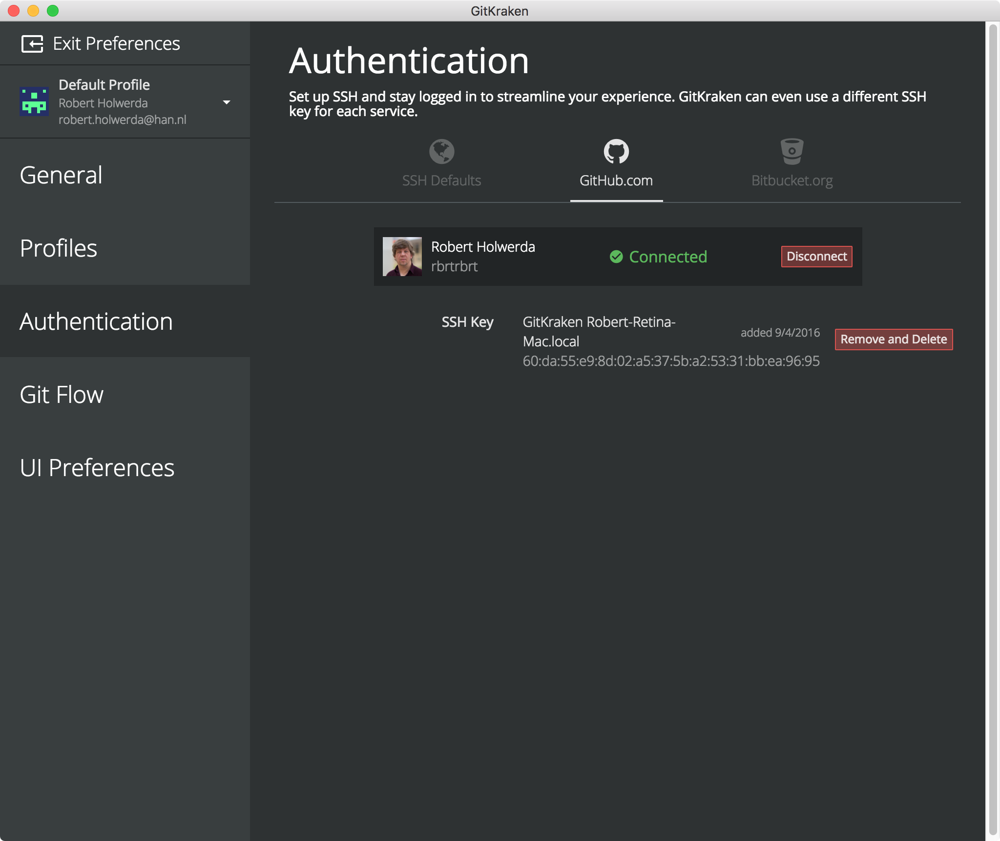
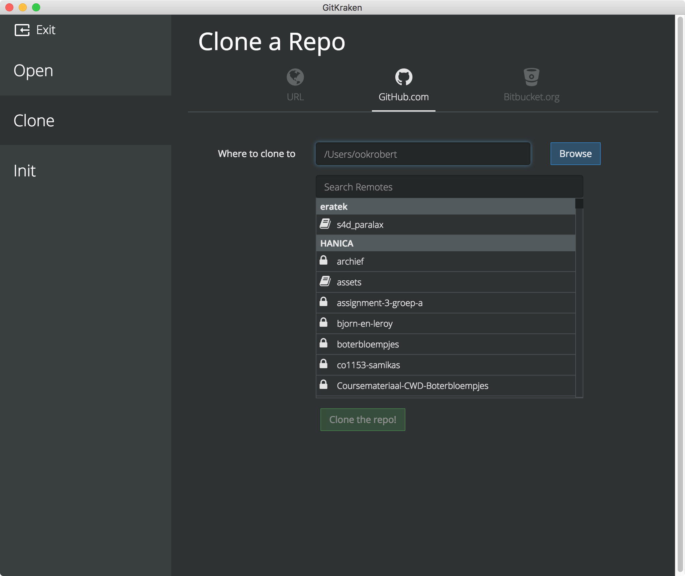
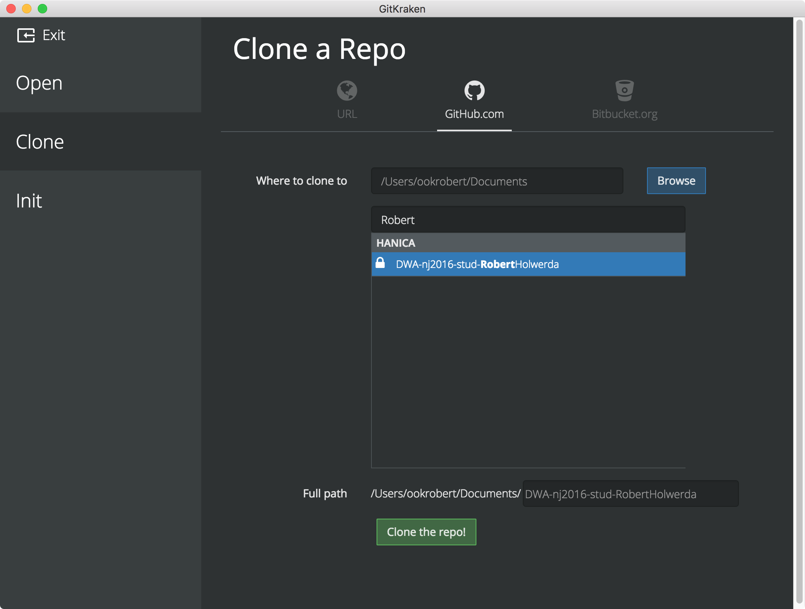
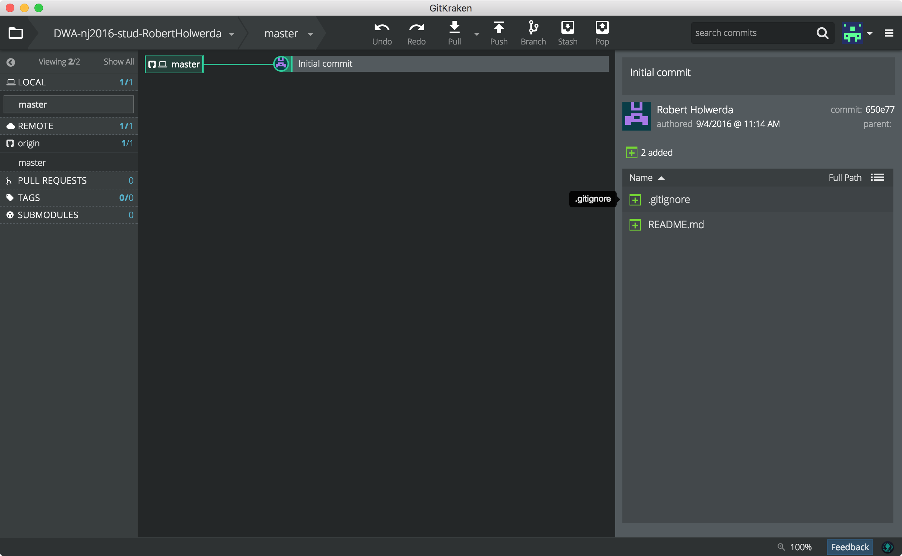
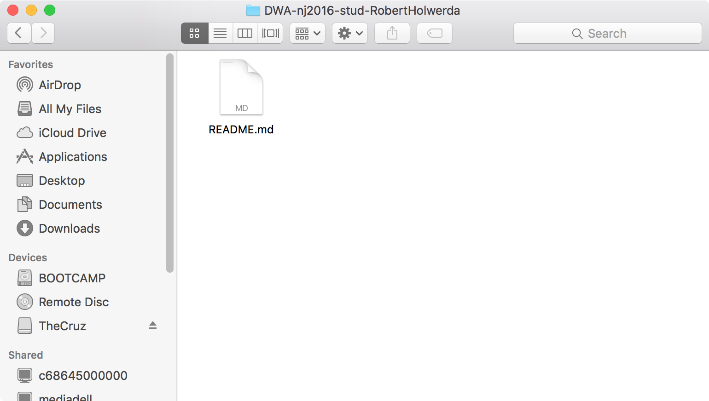

lab 1 Cloning Repositories
Goals
- Learn how to clone your remote repository.
Create a DWA directory 01
Create a DWA directory to host all your SWD and CWD work.
Start GitKraken and create a GitKraken account02
Start GitKraken, and fill out the "Create an Account" form if you haven't done so already.
Connect GitKraken to Github 03
Find the GitKraken Preferences screen, and navigate to the page called "Authentication". In this page, select the tab "Github", and click on the button "Connect to Github".
Enter your Github credentials in the webpage that opened up. Afterwards, your screen should look like this:
Now, click on the green button called "Generate SSH key and add to Github"
Exit the preferences screen
Clone your personal remote DWA repo 04
In the GitKraken main screen, click the white folder icon in the top-left. This shows you options for adding repositories to GitKraken. Select the page "Clone" in the left column, and the tab "Github.com"
Enter the location of your local DWA directory, and use "Search Remotes" to find your personal DWA repo (called "DWA-nj2016-stud-YourName"). Then press the "Clone the repo!" button.
Some notifications appear, and after the repo has been copied to your local directory, a green button appears in the top, called "Open Now". Click it.
GitKraken shows you the main screen for your repo:
Verify that the repo was copied ("cloned") to your HD, by finding it and checking that it contains —at least— the file "README.md". On your system, you may also see a file called ".gitignore", but on Mac and Linux machines, files whose name starts with a "." are hidden from view.
